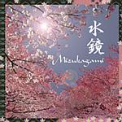

Home Artist links Label link

Mizukagami - Mizukagami
| Artist: | Mizukagami |
| Title: | Mizukagami |
| Label: | Musea Records FBGB 4496.AR |
| Length(s): | 48 minutes |
| Year(s) of release: | 2003 |
| Month of review: | [09/2003] |
Line up
Tanaami Futaba - vocals, flute
Junya Anan - synths, mellotron, string ensemble, organ, piano, vocoder, japanese percussion
Keiichi Yanagawa - bass
Yasuo Asakura - guitars, theorbe
Keita kamiyama - drums, ethnic percussion
Tracks
| 1) | Sakura | 11.19
|
| 2) | Haru No Sono | 5.31
|
| 3) | Suzukaze | 7.17
|
| 4) | Shinato No Kaze | 5.01
|
| 5) | Takamura | 8.29
|
| 6) | Yukimushi | 10.29
|
Summary
A Japanese progband on Musea.
The music
In Sakura this album has a strong opener, a combination of
the Japan side of sympho with some King Crimson and Camel
thrown in. There is flute, female vocals, but also a raw power
speaking from the opening instrumental part. The vocals
are in Japanese, not always in tune and a bit on the high
side. The mellifluous vocal passages are enriched
with plenty of synths and gurgling water. There is plenty
of tension in the music, also by the vocal flutterings which
occur after the sung verses. The instrumental parts are good.
Vocal wailings, acoustic guitar and woolly tapestries of synths
fill up the continuation. The feel is probably mainly Camel like,
but with the tenseness and the mellotron, King Crimson is also
a reference. Towards the end especially the guitar gets to have
more bite and the keyboards get more rowdy and meandering. Good
stuff, no holding back. This is in fact one of the drawbacks
of mucj prog from Japan, the bands hold back too much. In that
sense, one may think of Gerard here.
Haru No Sono is half as long, opening with a strong theme.
This is pure symphonic rock again, with vague drawn out vocals.
A full sound, quieter during the melancholy vocal passages,
on this one. Suzukaze contains the steady line of quality.
The vocals are a bit different at times here, faster, less ethereal.
Good to have some variation there. The melodies stay good, the music
very keyboard focussed, while also acoustic guitar is present.
Shinato No Kaze opens in up-beat fashion with nice synths
running alongside the drums. The synth work has some elements
of Kitaro at times, but the music itself is not that style at all.
The vocals are a bit flat here. There is a charming acoustic
intermezzo, after which the mellotron sets in rather subduedly.
The conclusion features some good vocal material.
Takamura is a somewhat longer track again, opening with bird
sound, and whats seems to be a folklore string instrument.
There is also mellow flute here, again the melody is good.
A slow moving song, but I think we are going to get an outburst
or two. Ah yes, there it starts with Tullian flute, ELPish organ
and some distorted guitar. Anyway, the vocal passages are a bit on the
lame side, sometimes a bit offtune too, making this the least succesful song so far. The song does have a bit of bite at the end with
spooky synths and keyboards offering quite a bit of tension again.
Yukimushi is the final track, and quite long. It opens slowly
enough, a bit waltzy with what seems something akin to cello (may be
synthetic, may be not). The vocals are a bit unsteady. Melodically
this is a bit too easy-going and somewhat overly sweet. The wah-wah
guitar tries to undo that opinion, but only succeeds in part.
The conclusion is quite rowdy and saves the day.
Conclusion
From Japan, I get the impression come two types of bands: the
melodic ones often with female vocals usually very symphonic and
keyboards oriented and the avant type prog band, angular, Crimsonesque,
tension rich, and just a little bit crazy. Mizukagami has elements
of both, although more of the former. The vocals are indeed female,
and at times a bit unsteady, the mood is often Camel like, melodic and a bit sad and soothing.
But fortunately, this band also has some more daring, tense elements
that make especially the first four songs interesting yet accessible.
On the final two tracks, the tenseness is lacking and my appreciation
of these songs was lower.
Although I think that it will be especially the friends of the
pure symphonic type of prog that will want to hear about this one,
it also holds something for the others, who need a bit of danger in
their prog. Fans of Quidam (but she is not Emilia) and their kin might
also want to hear this.
© Jurriaan Hage